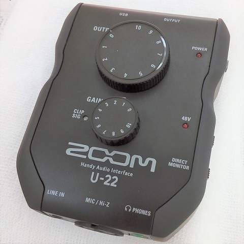
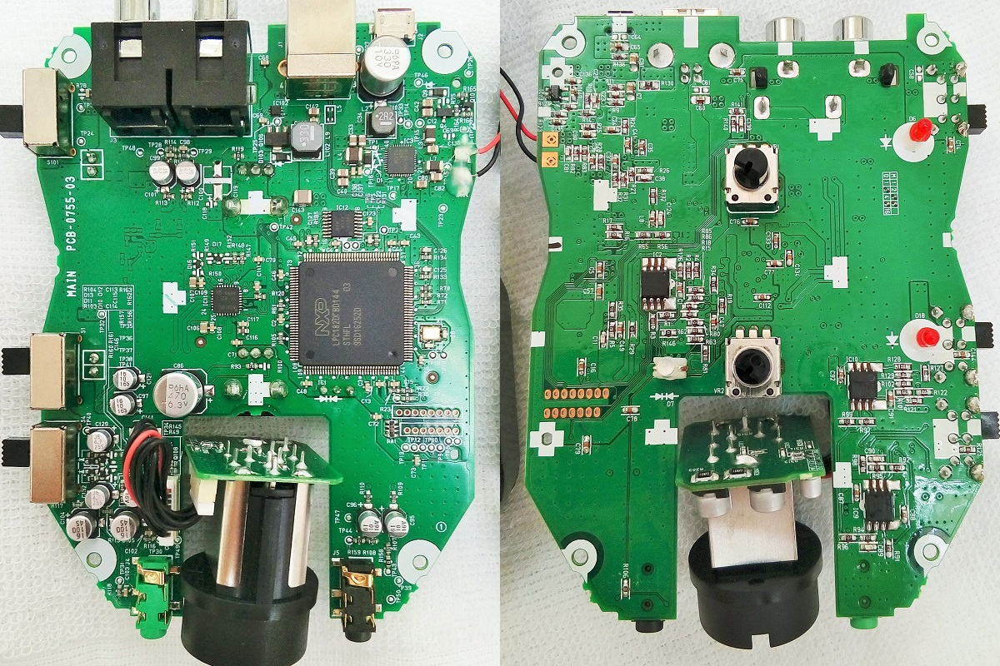
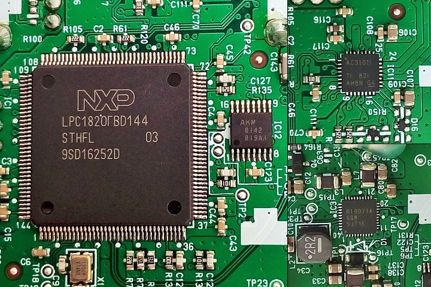
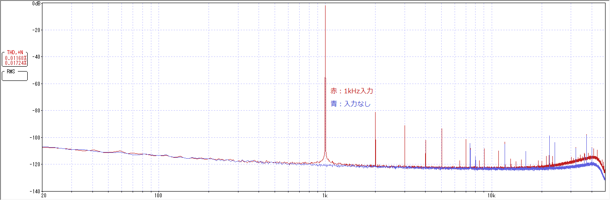
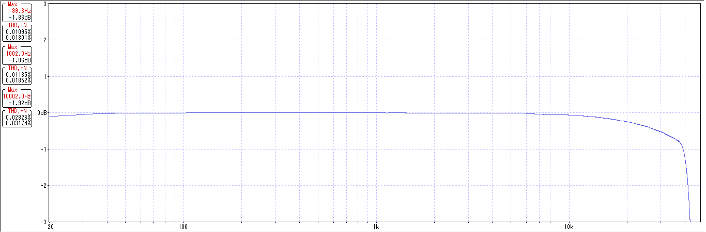

ZOOM U-22 分解・特性測定
2020年01月16日 カテゴリー：修理・改造・解析

ZOOM U-22というオーディオインターフェイスを購入しました。分解・特性測定を行っておきます。
【分解】
▽中身画像 ZOOM U-22 Handy Audio Interface Gut Shots

以下のICが確認できました。8ピンのオペアンプっぽいICの型番は読み取れませんでした。
・マイコン LPC1820FBD144
・クロックジェネレータ AK8142
・オーディオコーデック TLV320AIC3101
・電源 RT9971
絶縁型DC-DCコンバータを使った電源ではなさそうですがローノイズです。アナログGNDとデジタルGND（と思われる部分）がところどころコンデンサで繋いであるのは、ノイズ対策なのかもしれません。
OUTPUTノブは0.5dB単位で動いているようなのでおそらくデジタル制御です。GAINノブは連続的な動きなのでアナログ回路だと思われます。
※LINE IN使用時GAINノブは無効
【特性測定】
PHONES出力からLINE IN入力へステレオケーブルを接続した状態で特性を測定しました。OUTPUTノブは10です。
Windowsの場合、コントロールパネルのZOOM U-22 Control Panel（またはC:\Program Files\ZOOM\U-22 Driver\zmu22audiocp.exe）から Sampling Rate を 96000 Hz に設定しておきます。
＜PHONE出力＞
最大無歪出力: 約 0.7 Vrms （OUTPUTノブ 10、WaveGene振幅 -5.5dB）
出力インピーダンス: 10 Ω （マニュアルより）
＜LINE IN入力＞
最大無歪入力: 約 0.75 Vrms （CLIP SIGランプが赤に点灯）
入力インピーダンス: 22 kΩ （マニュアルより）
＜WaveGene設定＞
サンプリング周波数: 96000 ビット長: 24 チャンネル数: Stereo
・歪率測定 サイン波 100Hz 1kHz 10kHz FFT用に最適化（FFTサンプル数16384） -6dB
・周波数特性測定 ユーザー波形 FLATSWEEP_016384.WAV -6dB
※WaveGeneサイトにあるサンプリングレート48kHzのユーザー波形サンプルを使っています。本来は96kHz用の波形を用意すべきですが、20kHz以上の周波数も問題ないようなのでそのまま利用しています。
＜WaveSpectra設定＞
Avg: 300
[FFT] サンプルデータ数: 16384 窓関数: なし（矩形）
[再生/録音] フォーマット: 96000 s/s 24 bit Stereo
※DELL製PCでドライバをMMEにした場合、周波数特性が乱れました（別の東芝製PCでは問題なし）。PCやドライバとの相性があるのかもしれません。
▽ノイズレベル（POWER SOURCE: USB）

入力なしの時でも高域にいくつかピークが見えますが、特に問題ないでしょう。電池駆動でもほぼ同じ結果でした。
▽歪率・周波数特性

マニュアルの周波数特性には±2 dB（20 Hz - 40 kHz）と記載がありますが、それよりも良いのではないかと思います。